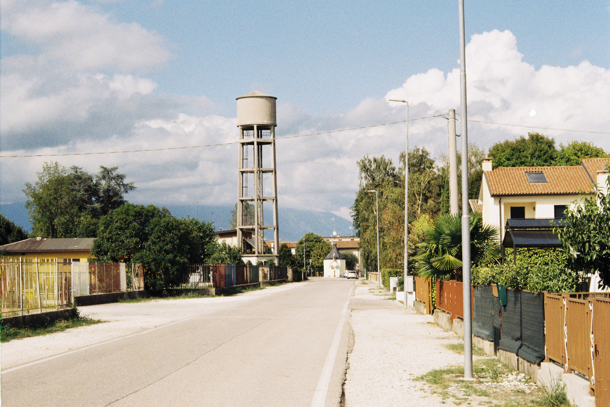
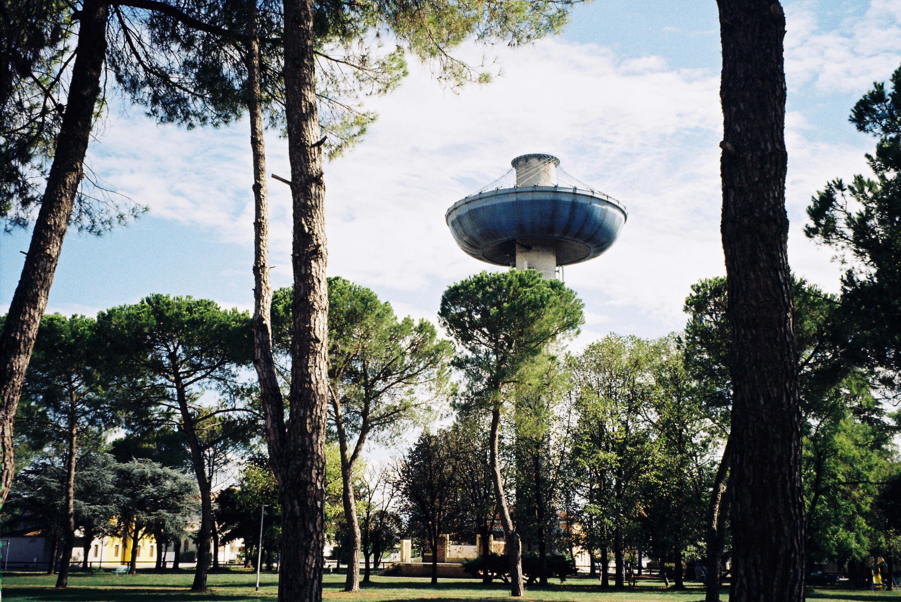
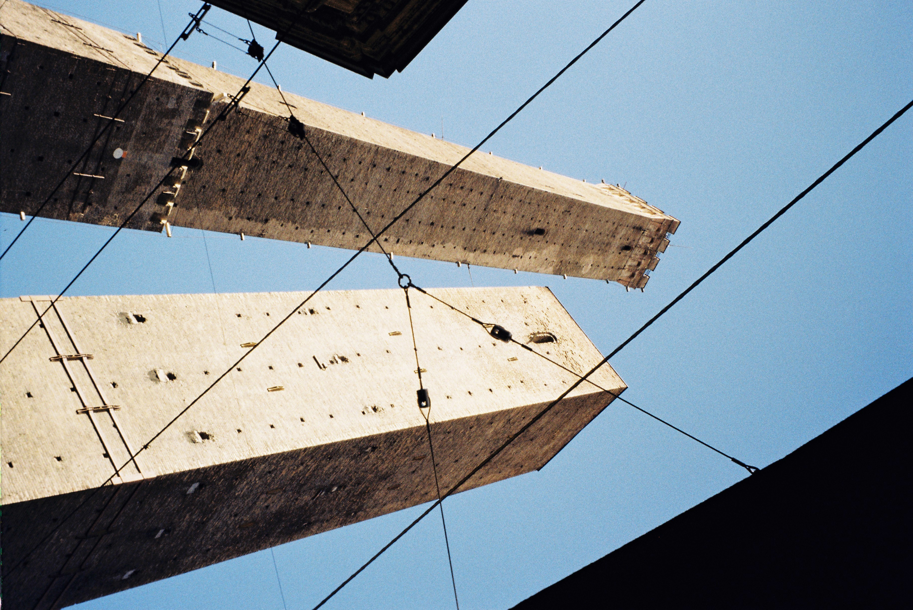
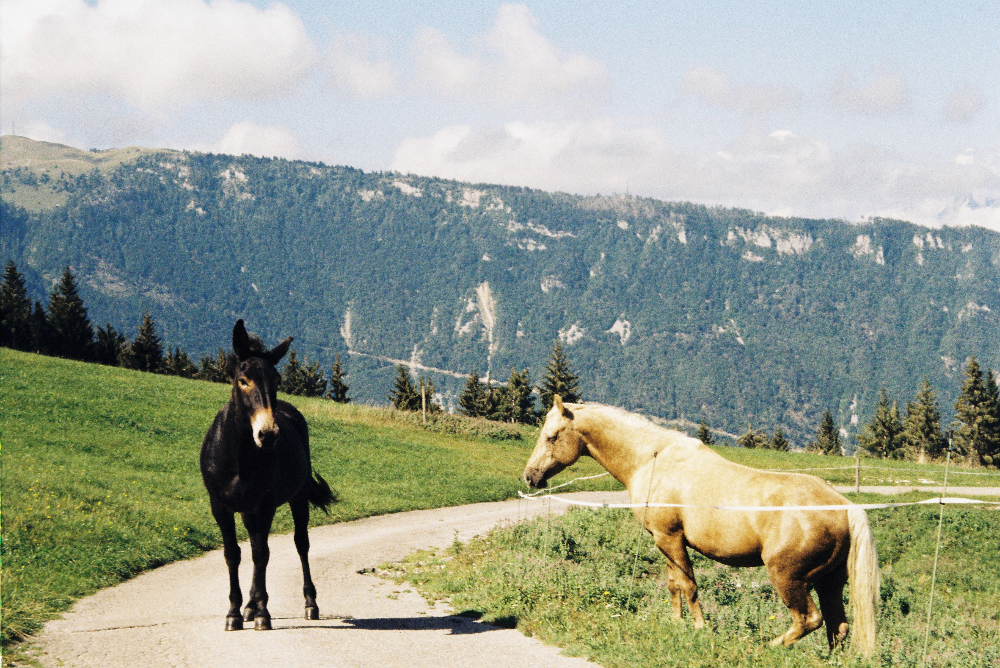

Photos

Hometown, Italy - Pentax Espio - Kodak Gold 200

Hometown, Italy - Pentax Espio - Kodak Gold 200

Bologna, Italy - Pentax Espio - Kodak Gold 200

Alpago, Italy - Pentax Espio - Kodak Gold 200